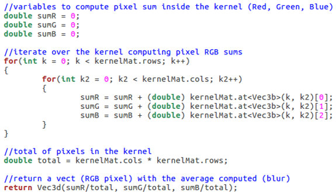

Algorithm
The blur algorithm takes each pixel and compute the average of the kernel around it, this kernel is a square with the pixel of interest in the center (so the kernel size must be odd), every pixel is replaced with the average of it’s kernel generating the blur effect, the bigger the kernel the stronger the blur effect.
The code below shows the process of computing the average and assigning it to the current pixel.
In the edges (where the kernel it is outside the limits), it is necessary to compute the blur with the remaining pixels.
the code bellow takes into account the edges to compute the blur effect.

The algorithm iterates over the array image to apply the blur effect to each pixel, the code bellow show that task.

Here are some results of the algorithm
The green pixel is the current pixel to be modified, the blue area is the kernel with size 3.
The code below shows the process of computing the average and assigning it to the current pixel.

In the edges (where the kernel it is outside the limits), it is necessary to compute the blur with the remaining pixels.
Examples of blur over an edge, The green pixel is the current pixel to be modified, the blue area is the kernel with size 3 on an edge.
the code bellow takes into account the edges to compute the blur effect.
The algorithm iterates over the array image to apply the blur effect to each pixel, the code bellow show that task.
Here are some results of the algorithm

Original 720px.

Blur effect 720px kernel size 19.

Original 1080px.

Blur effect 1080px kernel size 19.

Original 4k.